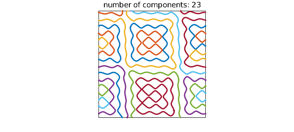
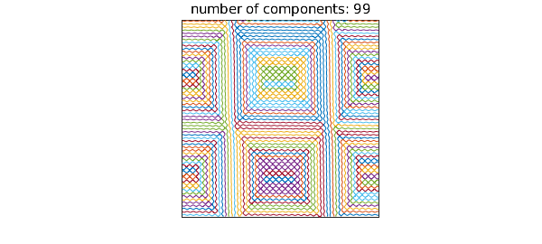

Dmitry Belyaev at Oxford is an expert on zero sets of functions composed form random plane waves and related problems. Here is an example he has looked at:
tic
LW = 'linewidth'; XT = 'xtick'; YT = 'ytick';
rng(1); a = randn(1,4) + 1i*rand(1,4);
cheb.xy
wave = @(k) real(a(1)*exp(i*pi*(k*x-y)) + a(2)*exp(i*pi*(k*x+y)) ...
+ a(3)*exp(i*pi*(k*y-x)) + a(4)*exp(i*pi*(k*y+x)));
r = roots(wave(8));
plot(r, LW, 2)
axis([-1 1 -1 1]), axis square, set(gca,XT,[],YT,[])
title(['number of components: ' int2str(size(r,2))])

The Chebfun2 roots command has picked out the distinct components of the zero set in the unit square: the result is a quasimatrix with 23 columns:
size(r)
ans = Inf 23
Here are the arc lengths of the pieces, sorted from smallest to largest:
arclength = @(f) norm(diff(f),1);
np = size(r,2);
al = zeros(np,1);
for k = 1:np
al(k) = arclength(r(:,k));
end
sort(al)
ans = 0.462332000495553 0.469593881675552 0.471827328193913 0.485442458935590 0.491254619532169 0.512513541254509 0.533473811745956 0.716762824182137 1.049356894183448 1.051361726613964 1.081904486477980 1.270740175884586 1.337865116448303 1.425305902994363 1.534662678361568 1.542105031993789 1.792398615642341 2.447271420800777 2.472054349165593 2.737113953119299 2.872453451514043 4.280542705507886 5.347711530511930
Computations with roots in Chebfun2 are delicate, and the number of components does not always come out right, nor are the curves always accurate. Here we seem to be doing well, though. We repeat the computation with $k=16$:
r = roots(wave(16)); plot(r, LW, 1.2) axis([-1 1 -1 1]), axis square, set(gca,XT,[],YT,[]) title(['number of components: ' int2str(size(r,2))])

And with $k=32$:
r = roots(wave(32)); plot(r, LW, .7) axis([-1 1 -1 1]), axis square, set(gca,XT,[],YT,[]) title(['number of components: ' int2str(size(r,2))])

Total time for this example:
toc
Elapsed time is 13.544606 seconds.